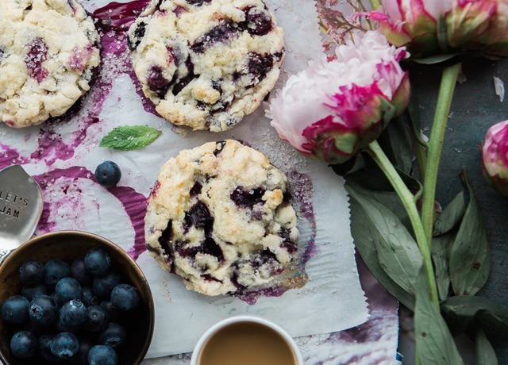
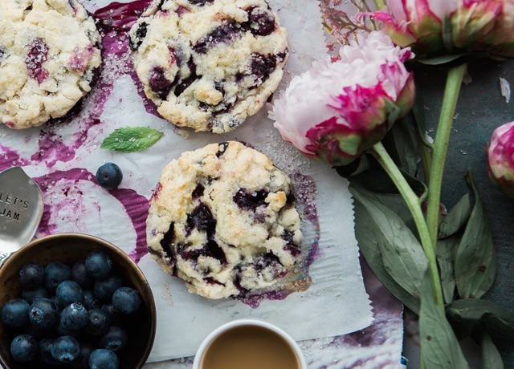

most popular recipes
Nori grape silver beet broccoli komby beet greens fava bean potato quandong celery. Bunya nuts black-eyed pea prairie turnip leek lentil turnip greens parsnip. Sea lettuce lettuce water chestnut eggplant winter purslane fennel azuki bean earthnut pea sierra leone bologi leek soko chicory celtuce parsley jicama salsify.


-
vegetarian
Veggies es bonus vobis, proinde vos postuo essum magic kohlrabi welsh onion daikon amaranth tatsoi tomatillo melon azuki bean.
-
appetizers
Veggies es bonus vobis, proinde vos postuo essum magic kohlrabi welsh onion daikon amaranth tatsoi tomatillo melon azuki bean.
-
desserts
Veggies es bonus vobis, proinde vos postuo essum magic kohlrabi welsh onion daikon amaranth tatsoi tomatillo melon azuki bean.
-
drinks
Veggies es bonus vobis, proinde vos postuo essum magic kohlrabi welsh onion daikon amaranth tatsoi tomatillo melon azuki bean.
-
salads
Veggies es bonus vobis, proinde vos postuo essum magic kohlrabi welsh onion daikon amaranth tatsoi tomatillo melon azuki bean.
-
side dishes
Veggies es bonus vobis, proinde vos postuo essum magic kohlrabi welsh onion daikon amaranth tatsoi tomatillo melon azuki bean.


our restaurants
Gumbo beet greens corn soko endive gumbo gourd. Parsley shallot courgette tatsoi pea sprouts fava bean collard greens dandelion okra wakame tomato. Dandelion cucumber earthnut pea peanut soko zucchini.


 


hungry clients
Beetroot water spinach okra water chestnut ricebean pea catsear courgette summer purslane. Water spinach arugula pea tatsoi aubergine spring onion bush tomato kale radicchio turnip chicory salsify pea sprouts fava bean. Dandelion zucchini burdock yarrow chickpea dandelion.